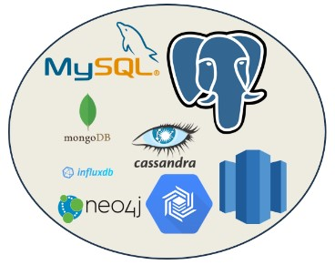

Databases Used for AI
Databases play a crucial role in Artificial Intelligence (AI) systems, providing the necessary data for
training, testing, and operational use. Here are some of the common types of databases used in AI:

Relational Databases
MySQL: Widely used for structured data in AI applications.
PostgreSQL: Known for its advanced features and support for complex queries.
NoSQL Databases
MongoDB: Popular for handling unstructured data, often used in AI for flexibility.
Cassandra: Known for scalability and high availability, suitable for large-scale AI applications.
Graph Databases
Neo4j: Highly popular for AI tasks that involve complex relationship data.
Time-Series Databases
InfluxDB: Frequently used for AI applications dealing with time-stamped data.
Columnar Databases
Google BigQuery: A serverless, highly scalable, and cost-effective multi-cloud data warehouse
designed
for business agility, offered by Google Cloud.
Data Warehouses
Amazon Redshift: A widely-used data warehouse service, great for large-scale data analysis.
Google BigQuery: A fully-managed, serverless data warehouse that enables scalable analysis.
Snowflake: Offers a cloud-based data warehouse that is highly scalable.
Cloud Databases
Cloud providers offer databases provide scalability, flexibility, and a range of tools for AI and
machine learning applications.
Amazon RDS: Amazon Relational Database Service (Amazon RDS) is a managed database service provided
by
Amazon Web Services (AWS)
Google Cloud SQL: Google Cloud SQL is a fully-managed database service that helps you set up,
maintain,
manage, and administer your relational databases on Google Cloud Platform.
In-Memory Databases
Redis: Often used for its performance in real-time analytics in AI.
Distributed File Systems
Hadoop Distributed File System (HDFS): Commonly used for storing large datasets for AI processing.
These databases are chosen based on the requirements of the AI project, each of these databases offers
unique capabilities and features that make suitable for various aspects of AI and machine learning, such
as handling large volumes of data, supporting fast data retrieval, and providing efficient data
processing capabilities.